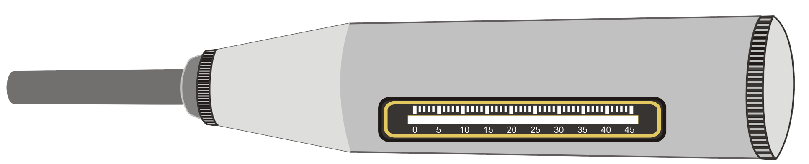

Rebound Hammer Test of Concrete
Introduction
Background: In an actual structureonsite, it is not always possible to estimate the strength of concrete directly. Some estimates of the quality of concrete as well as of the uniformity of casting of a structure can, however, be obtained by non-destructive techniques such as rebound hammer test and ultra-sonic pulse (UPS) tests. Rebound hammeras shown in the figure below, also called Schmidt Hammer, measures the hardness of a material surface by the measuring the rebound of a standard mass after an elastic impact against the surface. The mass is released from a standard pre-compressed spring, thus having a fixed amount of energy. The distance travelled by the mass after this elastic impact expressed as a percentage of original distance is termed as rebound number. The rebound numbergives a reasonable estimate of the strength with the help of suitable correlations between rebound number and strength. The impact energy required for rebound hammers for different applications related to concrete structures is given in the following table.

| Serial No. | Application | Approximate Impact Energy Required for the Rebound Hammer, Nm |
|---|---|---|
| A | For Testing normal weight concrete | 2.25 |
| B | For light-weight concrete or small and impact sensitive part of concrete | 0.75 |
| C | For testing mass concrete, for examples in roads, air- fields pavements and hydraulic structures | 30.00 |
The rebound hammer method could be used for:
i) Assessing the likely compressive strength of concrete,
ii) Assessing the uniformity of quality of a built-up structure,
iii) Assessing the development of strength with time of the same specimen, and
iv) Assessing the probable damage caused by corrosive environment on concrete etc.
In general, the rebound number increases as the strength increases but it is affected by several factors like types of cement and aggregate, surface condition and moisture content, curing and age of concrete, extent of carbonation of concrete, etc. Rebound number is indicative of the compressive strength of concrete up to a limited depth from the surface. If the concrete in a particular member has internal microcracking, flaws or heterogeneity across the cross-section.
Rebound hammer indices will not indicate the same. As such, the estimation of strength of concrete by rebound hammer method cannot be held to be very accurate and probable accuracy of prediction of concrete strength in a structure can be up to ± 25% depending upon correlation curve and methodology adopted for establishing correlation between rebound number and likely compressive strength. If the relationship between rebound number and compressive strength can be checked by tests on core samples obtained from the structure or standard specimens made with the same concrete materials and mix proportion, then the accuracy of results and confidence thereon are greatly increased.
Because of the various limitations in rebound hammer test, the combined use of ultrasonic pulse velocity (UPV) test and rebound hammer test is must for proper interpretation. If the quality of concrete assessed by ultrasonic pulse velocity method is excellent/good, only then the in-situ compressive strength assessed from the rebound hammer test is valid. This shall be taken as indicative of strength of concrete in the entire cross-section of the concrete member represented by both tests. In case the quality assessed by UPV is 'doubtful', the estimation of in-situ compressive strength by rebound indices shall be extended to the entire mass only based on other collateral measurements, for example, strength of site concrete cubes, cement content in the concrete or core testing. In cases the quality of concrete assessed by UPV is 'poor', no assessment of concrete strength shall be made from rebound hammer test.
Identifying outliers:
An outlier is an observation that appears to be inconsistent with the rest of a given data set. In general, there may be more than one outlier at one or both ends of the data set. Outliers typically are attributable to one or more of the following causes: measurement or recording error, contamination, incorrect distributional assumption, and/or rare observations. Outliers are not necessarily bad or erroneous. They can be taken as an indication of the existence of rare phenomena that could be a reason for further investigation. However, many statistics are sensitive to the presence of outliers. For example, the sample mean, and sample standard deviation are easily influenced by the presence of even a single outlier that could subsequently lead to invalid inferences.
It can be assumed that the compressive strength of concrete follows a normal distribution (also known as Gaussian distribution). The graphical normal probability plot can be used to test the validity of the normality assumption.One or more outliers on either side of a normal data set can be detected by using a procedure known as the generalized extreme studentized deviate (GESD) many-outlier procedure.
Apparatus:
| Name | Accuracy/Least count |
|---|---|
| Rebound Hammer | With calibration chart |
| Abrasive Stone | Medium-grain texture silicon carbide or equivalent material |